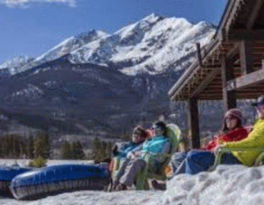

In Frisco you'll find plenty to do no matter what time of year. The adventure park offers snowtubing, cross country skiing, and much more during the winter. During the Summer the marina offers boat, paddle board, and kayak rentals, and any other time of year there is plenty of camping and hiking all around town.